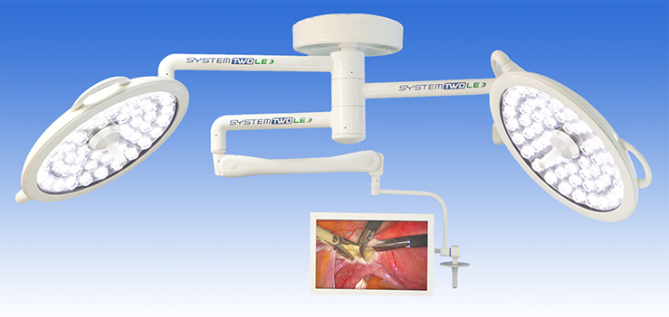

04 / 05 — Surgical Lights & Pendants
SUPPORT Multi-function Medical Pendant
Product lineSurgical Lights & Pendants
- Key features
- Built by a long-established specialist manufacturer and proven over many years of clinical use, with leading safety and engineering.
- Developed by our company as part of the Medical Illumination (USA) pendant family.
- Inherits the reliability, durability and low maintenance cost of the Navigator multi-function pendant system.
- High-capacity arm design with long reach, wide rotation, flexible positioning and broad coverage — fully meeting the needs of modern ICU gas supply.
- High-strength alloy construction with a smooth, easy-to-clean finish suited to clean operating rooms.
- Up to 340° of arm-joint rotation reaches every working area with ease.
- True separation of gas and electrical services for safety.
- Ergonomic equipment shelves with impact-protected corners.
- Height-adjustable shelves can be positioned to clinical need for greater flexibility.
- Shelf control handle with pneumatic brake and motorised lift buttons for easy operation.
- Gas outlets in all common standards and a wide range of accessories; simple, flexible installation.
- Truly modular: configurable as single-arm, double-arm, combined or bridge pendants, and for surgery, anaesthesia, endoscopy, perfusion, digital information, recovery, ICU, emergency and GI suites.
- Imported original equipment — safe, reliable, durable and very low to maintain.
—Related
More in this line

Surgical Lights & Pendants
AMI LED Surgical Light
AMI and SYSTEM TWO LED surgical lights and exam lights, plus Navigator / SUPPORT multi-function ceiling pendants.
View details
Surgical Lights & Pendants
AMI LED Premium Exam Light
AMI and SYSTEM TWO LED surgical lights and exam lights, plus Navigator / SUPPORT multi-function ceiling pendants.
View details
Surgical Lights & Pendants
SYSTEM TWO LED Surgical Light
AMI and SYSTEM TWO LED surgical lights and exam lights, plus Navigator / SUPPORT multi-function ceiling pendants.
View details